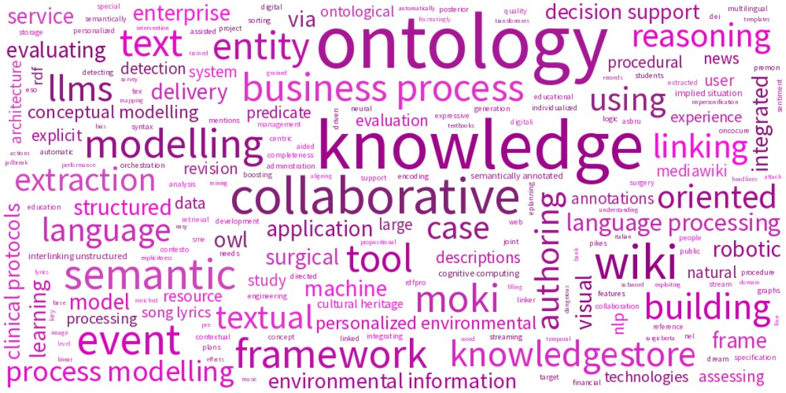

Marco Rospocher

Jump to: National Scientific Qualification - Appointments - Education - Awards
Associate Professor of Informatics at the University of Verona, within the Department of Foreign Languages and Literatures
Research Interests: Artificial Intelligence, Information Extraction, Semantic Web, Knowledge Representation and Reasoning, Natural Language Processing, Digital Humanities, Machine/Deep Learning, Methodologies and Tools for Collaborative Knowledge Acquisition, Computational Complexity, Algorithmic Graph Theory, Combinatorial Optimization
Research Sectors (ERC): PE6_7 - Artificial intelligence, intelligent systems, natural language processing, PE6_10 - Web and information systems, data management systems, information retrieval and digital libraries, data fusion
Curriculum Vitae: EN - IT (Updated: Nov 3, 2025)
Erdös Number: 3 (Marco Rospocher → Romeo Rizzi → Pavol Hell → Paul Erdös)
National Scientific Qualification as full professor in Italian Universities for sector 01/B1 (Informatica / Informatics)
Dec 12, 2023
[www]
National Scientific Qualification as full professor in Italian Universities for sector 09/H1 (Sistemi di Elaborazione Delle Informazioni / Information Processing Systems)
Dec 17, 2023
[www]
National Scientific Qualification as associate professor in Italian Universities for sector 01/B1 (Informatica / Informatics)
Dec 5, 2017
[www]
National Scientific Qualification as associate professor in Italian Universities for sector 09/H1 (Sistemi di Elaborazione Delle Informazioni / Information Processing Systems)
Dec 5, 2017
[www]
Director of the interdisciplinary research center "Digital Arena for Inclusive Humanities (DAIH)". DAIH is a center of excellence in the field of digital technologies and computational analysis applied to languages and literature, and aims to promote and facilitate inclusion in research, infrastructure, training, and dissemination of scientific content in order to overcome the disparities, inequalities, and discriminations of modern society
[web-site]
Jump to: Projects - Third-Party Contracts
Inclusive Humanities (MUR Dipartimenti di Eccellenza)
Prospettive di sviluppo nella ricerca e nella didattica delle lingue e letterature straniere
Jan 1, 2023 - Dec 31, 2027
[www]
With this project, the department aims to contribute to addressing several global challenges that have emerged in recent years. The pandemic emergency, the ecological crisis, and the current situation of geopolitical instability on a global level require universities to rethink their social function from an inclusive and digital perspective, aimed at widespread dissemination and sharing of scientific knowledge to the general public. These challenges require a rethinking of content and its accessibility, as well as experimentation in innovative and blended teaching methods in the field of foreign languages and literatures, aimed particularly at user groups that have not been adequately considered so far. The main purpose of the plan is to promote and foster inclusion in research, teaching, infrastructure, and the dissemination of scientific content in order to overcome gender, economic, social, and cultural disparities both within and outside the university.

NexusLinguarum (COST Action, CA18209)
European network for Web-centred linguistic data science
Jan 1, 2019 - Dec 31, 2023
[www]
The main aim of this Action is to promote synergies across Europe between linguists, computer scientists, terminologists, and other stakeholders in industry and society, in order to investigate and extend the area of linguistic data science.
Le Digital Humanities applicate alle lingue e letterature straniere (MIUR Dipartimenti di Eccellenza)
Jan 1, 2018 - Dec 31, 2022
[www]
The Department of Foreign Languages and Literatures of the University of Verona, awarded as Department of Excellence by the National Agency for the Evaluation of the University and Research System (ANVUR), obtained a ministerial funding of 6 million euros for the realization of an interdisciplinary project, which will allow the department to become a center of excellence and a laboratory of experimentation, both for research and for teaching, nationally and internationally, in the field of digital humanities applied to foreign languages and literature. The project focuses on the preservation and dissemination of cultural heritage, innovatively enhancing digital methodologies to broaden and better realize the research areas in two areas: philological-literary and linguistic.
NewsReader (EU FP7 Strep Project, Grant 316404)
Building structured event indexes of large volumes of financial and economic data for decision making
Jan 1, 2013 - Dec 31, 2015
[www]
NewsReader will process news in 4 different languages when it comes in. It will extract what happened to whom, when and where, removing duplication, complementing information, registering inconsistencies and keeping track of the original sources. Any new information is integrated with the past, distinguishing the new from the old and unfolding story lines in a similar way as people tend to remember the past and access knowledge and information. The difference being that NewsReader can provide access to all original sources and will not forget any details. We will develop a decision-support tool that allows professional decision-makers to explore these story lines using visual interfaces and interactions to exploit their explanatory power and their systematic structural implications. Likewise, NewsReader can make predictions from the past on future events or explain new events and developments through the past. The tool will be tested by professional decision makers in the financial and economic area.

ePlanning (Progetto Di Ricerca Applicata, Finanziato dalla Provincia di Trento ai sensi della L.P. 13.12.1999, n. 6, art. 5)
Sistema esperto per la creazione di progetti educativo-didattici per alunni con Bisogni Educativi Speciali
Jan 1, 2013 - Dec 31, 2014
ePlanning is a project involving the DKM unit of FBK, and the company Edizioni Centro Studi Erickson, whose principal activity is the production and distribution of didactic materials (books, journals, multimedia, software) with the focus on learning difficulties, remediation activities and the like. The goal of the project is to build an expert system for the creation of educational-teaching plans for pupils with special educational needs.

PESCaDO (EU FP7 Strep Project, Grant 248594)
Personalized Environmental Service Configuration and Delivery Orchestration
Jan 1, 2010 - Dec 31, 2012
[www]
The overall goal of PESCaDO is to research and develop strategies for user-centred environmental service orchestration and multilingual information delivery. The strategies, realized as an operational workbench, will support the user during the entire process of decision-making – from the formulation of the problem, via the search for adequate environmental service nodes and their connection (including data, knowledge and language synchronization), up to multilingual information, advice, hints, etc. delivery. The workbench will adapt to the language preferences and the profile and the needs of the user. Furthermore, it will allow for intervention and feedback at any stage of the process, incorporate the received feedback and facilitate several loops of the process.

APOSDLE (EU FP6 IP Project, Grant 027023)
Advanced process-oriented self-directed learning environment
Mar 1, 2006 - Feb 28, 2010
[www]
The EU project APOSDLE develops a software platform and tools to support you to learn @ work: Learn within the context of your immediate work and within your current work environment. The new Advanced Process-Oriented Self-Directed Learning Environment will provide you with practical guidance, learning content and expert advice when you need it and where you need it.
Automated analysis of questionnaire responses on inclusion in teaching using NLP tools
Oct 1, 2025 - Nov 30, 2025
Application of advanced Artificial Intelligence techniques in Natural Language Processing (NLP) for Italian, with the aim of analyzing responses from members of the Italian educational community to a questionnaire on inclusion in teaching practices.
Jump to: Journals - Book Chapters - Conferences - Workshops - Edited Works - Others
[Word-cloud automatically generated from publication titles - Last Update: Nov 3, 2025]
| [J34] | Marco Bombieri, Paolo Fiorini, Simone Paolo Ponzetto and Marco Rospocher. Do LLMs Dream of Ontologies?. ACM Transactions on Intelligent Systems and Technology (To appear) [bib] |
| [J33] | Marco Bombieri and Marco Rospocher. Mining Impersonification Bias in LLMs via Survey Filling. Information, vol. 16, no. 11. ISSN: 2078-2489 (2025) [bib] |
| [J32] | Marco Bombieri, Simone Paolo Ponzetto and Marco Rospocher. The Dangerous Effects of a Frustratingly Easy LLMs Jailbreak Attack. IEEE Access, vol. 13, pp. 126418–126431 (2025) [bib][scopus][wos] |
| [J31] | Iftikhar Muhammad and Marco Rospocher. On Assessing the Performance of LLMs for Target-Level Sentiment Analysis in Financial News Headlines. Algorithms, vol. 18, no. 1. ISSN: 1999-4893 (2025) [bib][scopus][wos] |
| [J30] | Marco Bombieri, Marco Rospocher, Simone Paolo Ponzetto and Paolo Fiorini. The Robotic-Surgery Propositional Bank. Language Resources and Evaluation, vol. 58, no. 3, pp. 1043–1071 (2024) [bib][scopus][wos] |
| [J29] | Marco Bombieri, Marco Rospocher, Simone Paolo Ponzetto and Paolo Fiorini. SurgicBERTa: A pre-trained language model for procedural surgical language. International Journal of Data Science and Analytics, vol. 18, no. 1, pp. 69–81 (2024) [bib][scopus][wos] |
| [J28] | Marco Rospocher. Detecting explicit lyrics: a case study in Italian music. Language Resources and Evaluation, vol. 57, no. 2, pp. 849–867 (2023) [bib][scopus][wos] |
| [J27] | Marco Rospocher and Samaneh Eksir. Assessing Fine-Grained Explicitness of Song Lyrics. Information, vol. 14, no. 3. ISSN: 2078-2489 (2023) [bib][scopus][wos] |
| [J26] | Marco Bombieri, Marco Rospocher, Simone Paolo Ponzetto and Paolo Fiorini. Machine understanding surgical actions from intervention procedure textbooks. Computers in Biology and Medicine, vol. 152, pp. 106415. ISSN: 0010-4825 (2023) [bib][scopus][wos] |
| [J25] | Marco Bombieri, Daniele Meli, Diego Dall'Alba, Marco Rospocher and Paolo Fiorini. Mapping natural language procedures descriptions to linear temporal logic templates: an application in the surgical robotic domain. Applied Intelligence, vol. 53, no. 22, pp. 26351–26363. ISBN: 1573-7497 (2023) [bib][scopus][wos] |
| [J24] | Marco Rospocher. On exploiting transformers for detecting explicit song lyrics. Entertainment Computing, vol. 43, pp. 100508. ISSN: 1875-9521 (2022) [bib][scopus][wos] |
| [J23] | Shahi Dost, Luciano Serafini, Marco Rospocher, Lamberto Ballan and Alessandro Sperduti. Aligning and linking entity mentions in image, text, and knowledge base. Data & Knowledge Engineering, vol. 138. ISSN: 0169-023X (2022) [bib][scopus][wos] |
| [J22] | Matteo Lorenzini, Marco Rospocher and Sara Tonelli. Automatically evaluating the quality of textual descriptions in cultural heritage records. International Journal on Digital Libraries, vol. 22, no. 2, pp. 217–231. ISBN: 1432-1300 (2021) [bib][scopus][wos] |
| [J21] | Marco Bombieri, Marco Rospocher, Diego Dall'Alba and Paolo Fiorini. Automatic detection of procedural knowledge in robotic-assisted surgical texts. International Journal of Computer Assisted Radiology and Surgery, vol. 16, pp. 1287–1295. ISBN: 1861-6429 (2021) [bib][scopus][wos] |
| [J20] | Marco Rospocher. Explicit song lyrics detection with subword-enriched word embeddings. Expert Systems with Applications, vol. 163. ISSN: 0957-4174 (2021) [bib][scopus][wos] |
| [J19] | Matteo Lorenzini, Marco Rospocher and Sara Tonelli. On assessing metadata completeness in digital cultural heritage repositories. Digital Scholarship in the Humanities, vol. 36, no. Supplement 2, pp. ii182–ii188. ISSN: 2055-7671 (2021) [bib][scopus][wos] |
| [J18] | Marco Rospocher and Francesco Corcoglioniti. Knowledge-driven joint posterior revision of named entity classification and linking. Journal of Web Semantics, vol. 65, pp. 100617. ISSN: 1570-8268 (2020) [bib][scopus][wos] |
| [J17] | Matteo Lorenzini, Marco Rospocher and Sara Tonelli. Proposta per una valutazione automatica della completeness dei metadati nel contesto delle biblioteche digitali. DigItalia, vol. 2, pp. 159–167 (2020) [bib] |
| [J16] | Marco Rospocher, Francesco Corcoglioniti and Mauro Dragoni. Boosting Document Retrieval with Knowledge Extraction and Linked Data. Semantic Web - Interoperability, Usability, Applicability, vol. 10, no. 4, pp. 753–778. ISSN: 2210-4968 (2019) [bib][scopus][wos] |
| [J15] | Marco Rospocher, Francesco Corcoglioniti and Alessio Palmero Aprosio. PreMOn: LODifing Linguistic Predicate Models. Language Resources and Evaluation, vol. 53, no. 3, pp. 499–524 (2019) [bib][scopus][wos] |
| [J14] | Giulio Petrucci, Marco Rospocher and Chiara Ghidini. Expressive Ontology Learning as Neural Machine Translation. Journal of Web Semantics, vol. 52-53, pp. 66 – 82. Elsevier B.V.. ISSN: 1570-8268 (2018) [bib][scopus][wos] |
| [J13] | Francesco Corcoglioniti, Marco Rospocher and Alessio Palmero Aprosio. Frame-Based Ontology Population with PIKES. IEEE Transactions on Knowledge and Data Engineering, vol. 28, no. 12, pp. 3261–3275. IEEE. ISSN: 1041-4347 (2016) [bib][scopus][wos] |
| [J12] | Piek Vossen, Rodrigo Agerri, Itziar Aldabe, Agata Cybulska, Marieke van Erp, Antske Fokkens, Egoitz Laparra, Anne-Lyse Minard, Alessio Palmero Aprosio, German Rigau, Marco Rospocher and Roxane Segers. NewsReader: Using knowledge resources in a cross-lingual reading machine to generate more knowledge from massive streams of news. Knowledge-Based Systems, vol. 110, pp. 60–85. Elsevier B.V.. ISSN: 0950-7051 (2016) [bib][scopus][wos] |
| [J11] | Marco Rospocher, Marieke van Erp, Piek Vossen, Antske Fokkens, Itziar Aldabe, German Rigau, Aitor Soroa, Thomas Ploeger and Tessel Bogaard. Building Event-Centric Knowledge Graphs from News. Web Semantics: Science, Services and Agents on the World Wide Web, vol. 37--38, pp. 132–151. Elsevier B.V.. ISSN: 1570-8268 (2016) [bib][scopus][wos] |
| [J10] | Sofia Cramerotti, Massimo Turrini, Marco Buccio, Silvia Larentis, Marco Rospocher, Luciano Serafini, Elena Cardillo and Ivan Donadello. ePlanning: an Ontology-based System for Building Individualized Education Plans for Students with Special Educational Needs. MED -- Media Education, vol. 6, no. 1, pp. 101–110. Edizioni Centro Studi Erickson S.p.a.. ISSN: 2038-3002 (2015) [bib] |
| [J9] | Francesco Corcoglioniti, Marco Rospocher, Roldano Cattoni, Bernardo Magnini and Luciano Serafini. The KnowledgeStore: a Storage Framework for Interlinking Unstructured and Structured Knowledge. International Journal on Semantic Web and Information Systems, vol. 11, no. 2, pp. 1–35. IGI Global. ISSN: 1552-6283; 1552-6291 (2015) [bib][scopus][wos] |
| [J8] | Leo Wanner, Harald Bosch, Nadjet Bouayad-Agha, Gerard Casamayor, Thomas Ertl, Desiree Hilbring, Lasse Johansson, Kostas Karatzas, Ari Karppinen, Ioannis Kompatsiaris, Tarja Koskentalo, Simon Mille, Jürgen Moßgraber, Anastasia Moumtzidou, Maria Myllynen, Emanuele Pianta, Marco Rospocher, Luciano Serafini, Virpi Tarvainen, Sara Tonelli and Stefanos Vrochidis. Getting the environmental information across: from the Web to the user. Expert Systems, vol. 32, no. 3, pp. 405–432. John Wiley & Sons Ltd. ISSN: 1468-0394 (2015) [bib][scopus][wos] |
| [J7] | Leo Wanner, Marco Rospocher, Stefanos Vrochidis, Lasse Johansson, Nadjet Bouayad-Agha, Gerard Casamayor, Ari Karppinen, Ioannis Kompatsiaris, Simon Mille, Anastasia Moumtzidou and Luciano Serafini. Ontology-centered environmental information delivery for personalized decision support. Expert Systems with Applications, vol. 42, no. 12, pp. 5032–5046. Elsevier B.V.. ISSN: 0957-4174 (2015) [bib][scopus][wos] |
| [J6] | Chiara Di Francescomarino, Chiara Ghidini and Marco Rospocher. Evaluating Wiki Collaborative Features in Ontology Authoring. IEEE Transactions on Knowledge and Data Engineering, vol. 26, no. 12, pp. 2997–3011. IEEE. ISSN: 1041-4347 (2014) [bib][scopus][wos] |
| [J5] | Chiara Ghidini, Chiara Di Francescomarino, Marco Rospocher, Paolo Tonella and Luciano Serafini. Semantics-Based Aspect-Oriented Management of Exceptional Flows in Business Processes. IEEE Transactions on Systems, Man, and Cybernetics, Part C: Applications and Reviews, vol. 42, no. 1, pp. 25–37. IEEE. ISSN: 1094-6977 (2012) [bib][scopus][wos] |
| [J4] | Chiara Ghidini, Marco Rospocher and Luciano Serafini. Modeling in a Wiki with MoKi: Reference Architecture, Implementation, and Usages. International Journal On Advances in Life Sciences, vol. 4, no. 3&4, pp. 111–124. IARIA. ISSN: 1942-2660 (2012) [bib] |
| [J3] | Marco Rospocher, Sara Tonelli, Luciano Serafini and Emanuele Pianta. Corpus-based Terminological Evaluation of Ontologies. Applied Ontology, vol. 7, no. 4, pp. 429–448. IOS Press. ISSN: 1570-5838; 1875-8533 (2012) [bib][scopus][wos] |
| [J2] | Chiara Di Francescomarino, Chiara Ghidini, Marco Rospocher, Luciano Serafini and Paolo Tonella. A framework for the collaborative specification of semantically annotated business processes. Journal of Software Maintenance and Evolution: Research and Practice, vol. 23, no. 4, pp. 261–295. John Wiley & Sons Ltd. ISSN: 1532-0618 (2011) [bib][scopus][wos] |
| [J1] | Romeo Rizzi and Marco Rospocher. Covering partially directed graphs with directed paths. Discrete Mathematics, vol. 306, no. 13, pp. 1390–1404. Elsevier B.V.. ISSN: 0012-365X (2006) [bib][scopus][wos] |
| [BC6] | Paolo Frassi and Marco Rospocher. Ontologie, locuzioni deboli e legami fra entità terminologiche nell'ambito del progetto DIACOM-fr. Risorse e strumenti per l'elaborazione e la diffusione della terminologia in Italia, pp. 138–151. Eurac Research (2022) [bib] |
| [BC5] | Francesco Corcoglioniti, Marco Rospocher, Roldano Cattoni, Bernardo Magnini and Luciano Serafini. The KnowledgeStore: A Storage Framework for Interlinking Unstructured and Structured Knowledge. Information Retrieval and Management: Concepts, Methodologies, Tools, and Applications, pp. 686–721. IGI Global. ISBN: 9781522551911 (2018) [bib][scopus] |
| [BC4] | Francesco Corcoglioniti, Marco Rospocher, Roldano Cattoni, Bernardo Magnini and Luciano Serafini. Managing Large Volumes of Interlinked Text and Knowledge With the KnowledgeStore. Innovations, Developments, and Applications of Semantic Web and Information Systems, pp. 32–61. IGI Global. ISBN: 9781522550426; 1522550429; 9781522550433 (2018) [bib] |
| [BC3] | Alessio Palmero Aprosio, Francesco Corcoglioniti, Mauro Dragoni and Marco Rospocher. Supervised Opinion Frames Detection with RAID. Semantic Web Evaluation Challenges, vol. 548, pp. 251–263. Springer International Publishing. ISBN: 978-3-319-25517-0 (2015) Semantic Sentiment Analysis Award (Task 3 - Frame entities Identification) at the Semantic Web Evaluation of the 12th European Semantic Web Conference ESWC2015 [bib][scopus][wos] |
| [BC2] | Michael Erdmann, Daniel Hansch, Viktoria Pammer, Marco Rospocher, Chiara Ghidini, Stefanie Lindstaedt and Luciano Serafini. Applications of Semantic Wikis. Context and Semantics for Knowledge Management: Technologies for Personal Productivity, pp. 229–254. Springer-Verlag. ISBN: 978-3-642-19509-9; 978-3-642-19510-5 (2011) [bib] |
| [BC1] | Claudio Eccher, Antonella Ferro, Andreas Seyfang, Marco Rospocher and Silvia Miksch. Modeling Clinical Protocols Using Semantic MediaWiki: The Case of the Oncocure Project. Knowledge Management for Health Care Procedures: ECAI 2008 Workshop, K4HelP 2008, Patras, Greece, July 21, 2008, Revised Selected Papers, vol. 5626, pp. 42–54. Springer. ISBN: 978-3-642-03261-5 (2008) [bib][scopus][wos] |
| [C56] | Marco Bombieri, Simone Paolo Ponzetto and Marco Rospocher. Do LLMs Authentically Represent Affective Experiences of People with Disabilities on Social Media?. CLiC-it 2025 Proceedings (2025) [bib] |
| [C55] | Iftikhar Muhammad, Marco Rospocher, Timotej Knez and Slavko {\v Z}itnik. Benchmarking Large Language Models for Target-Based Financial Sentiment Analysis. CLiC-it 2025 Proceedings (2025) [bib] |
| [C54] | Manuel Boschiero, Marco Rospocher, Olga Lucia Forlani and Silvano Pasquali. Migliorare l'accessibilità dei materiali didattici digitali nel contesto universitario: un caso di studio. Atti del MoodleMoot Italia 2023, pp. 61–70. MediaTouch 2000 (In co-edizione con Associazione Italiana Utenti Moodle A.p.s (AIUM), Università degli Studi di Firenze). ISBN: 978-88-907493-9-1 (2024) [bib] |
| [C53] | Maria Adele Cipolla, Anna Cappellotto and Marco Rospocher. Collaboration practices between people and tools: the case of "Snorra Edda. A collaborative bibliography (SnECB)". Digital Humanities 2023. Collaboration as Opportunity (DH2023). Zenodo (2023) [bib] |
| [C52] | Marco Bombieri, Marco Rospocher, Simone Paolo Ponzetto and Paolo Fiorini. The Robotic Surgery Procedural Framebank. Proceedings of the Language Resources and Evaluation Conference, pp. 3950–3959. European Language Resources Association (2022) [bib][scopus][wos] |
| [C51] | Shahi Dost, Luciano Serafini, Marco Rospocher, Lamberto Ballan and Alessandro Sperduti. VTKEL: A resource for Visual-Textual-Knowledge Entity Linking. Proceedings of the 35th Annual ACM Symposium on Applied Computing, pp. 2021–2028 (2020) [bib][scopus][wos] |
| [C50] | Shahi Dost, Luciano Serafini, Marco Rospocher, Lamberto Ballan and Alessandro Sperduti. Jointly Linking Visual and Textual Entity Mentions with Background Knowledge. Natural Language Processing and Information Systems - 25th International Conference on Applications of Natural Language to Information Systems, NLDB 2020, Saarbrücken, Germany, June 24-26, 2020, Proceedings, vol. 12089 of Lecture Notes in Computer Science, pp. 264–276. Springer (2020) [bib][scopus][wos] |
| [C49] | Shahi Dost, Luciano Serafini, Marco Rospocher, Lamberto Ballan and Alessandro Sperduti. On Visual-Textual-Knowledge Entity Linking. 14th IEEE International Conference on Semantic Computing (IEEE-ICSC), pp. 190–193 (2020) [bib][scopus][wos] |
| [C48] | Shahi Dost, Luciano Serafini, Marco Rospocher, Lamberto Ballan and Alessandro Sperduti. VT-LINKER: Visual-Textual-Knowledge Entity Linker. ECAI 2020: 24th European Conference on Artificial Intelligence, vol. 325 of Frontiers in Artificial Intelligence and Applications, pp. 2897–2898. IOS Press (2020) [bib][scopus][wos] |
| [C47] | Matteo Lorenzini, Marco Rospocher and Sara Tonelli. Computer-Assisted Curation of Digital Cultural Heritage Resources. Digital Humanities 2019 (DH2019) (2019) [bib] |
| [C46] | Marco Rospocher. An Ontology-Driven Probabilistic Soft Logic Approach to Improve NLP Entity Annotations. The Semantic Web - ISWC 2018 - 17th International Semantic Web Conference, Monterey, CA, USA, October 8-12, 2018, Proceedings, Part I, vol. 11136 of Lecture Notes in Computer Science, pp. 144–161. Springer (2018) [bib][scopus][wos][slides][video] |
| [C45] | Mauro Dragoni, Marco Rospocher, Tania Bailoni, Rosa Maimone and Claudio Eccher. Semantic Technologies for Healthy Lifestyle Monitoring. The Semantic Web - ISWC 2018 - 17th International Semantic Web Conference, Monterey, CA, USA, October 8-12, 2018, Proceedings, Part II, vol. 11137 of Lecture Notes in Computer Science, pp. 307–324. Springer (2018) [bib][scopus][wos] |
| [C44] | Marco Rospocher and Francesco Corcoglioniti. Joint Posterior Revision of NLP Annotations via Ontological Knowledge. Proceedings of the Twenty-Seventh International Joint Conference on Artificial Intelligence, IJCAI-18, pp. 4316–4322. International Joint Conferences on Artificial Intelligence Organization. ISBN: 978-0-9992411-2-7 (2018) [bib][scopus][wos][slides][poster] |
| [C43] | Stefano Borgo, Loris Bozzato, Alessio Palmero Aprosio, Marco Rospocher and Luciano Serafini. Towards Integration of Ontology and Text-extracted Data for Event Coreference Reasoning. Proceedings of the Symposium on Applied Computing, pp. 353–355. ACM. ISBN: 978-1-4503-4486-9 (2017) [bib][scopus][poster] |
| [C42] | Francesco Corcoglioniti, Marco Rospocher and Alessio Palmero Aprosio. A 2-phase Frame-based Knowledge Extraction Framework. Proceedings of the 31st Annual ACM Symposium on Applied Computing, Pisa, Italy, April 4-8, 2016, pp. 354–361. ACM. ISBN: 978-1-4503-3739-7 (2016) [bib][scopus][slides] |
| [C41] | Roxane Segers, Marco Rospocher, Piek Vossen, Egoitz Laparra, German Rigau and Anne-Lyse Minard. The Event and Implied Situation Ontology (ESO): Application and Evaluation. Proceedings of the Tenth International Conference on Language Resources and Evaluation (LREC 2016), pp. 1463–1470. European Language Resources Association (ELRA). ISBN: 978-2-9517408-9-1 (2016) [bib][scopus][wos] |
| [C40] | Francesco Corcoglioniti, Marco Rospocher, Alessio Palmero Aprosio and Sara Tonelli. PreMOn: a Lemon Extension for Exposing Predicate Models as Linked Data. Proceedings of the Tenth International Conference on Language Resources and Evaluation (LREC 2016), pp. 877–884. European Language Resources Association (ELRA). ISBN: 978-2-9517408-9-1 (2016) [bib][scopus][wos] |
| [C39] | Roxane Segers, Egoitz Laparra, Marco Rospocher, Piek Vossen, German Rigau and Filip Ilievski. The Predicate Matrix and the Event and Implied Situation Ontology: Making More of Events. Proceedings of the Eighth Global WordNet Conference (Bucharest, Romania, January 27-30, 2016), pp. 360–368. ISBN: 978-973-0-20728-6 (2016) [bib][scopus] |
| [C38] | Francesco Corcoglioniti, Mauro Dragoni, Marco Rospocher and Alessio Palmero Aprosio. Knowledge Extraction for Information Retrieval. The Semantic Web. Latest Advances and New Domains - 13th International Conference, ESWC 2016, Heraklion, Crete, Greece, May 29 - June 2, 2016, Proceedings, vol. 9678 of Lecture Notes in Computer Science, pp. 317–333. Springer. ISBN: 978-3-319-34128-6, 978-3-319-34129-3 (2016) [bib][scopus][wos][slides][video] |
| [C37] | Giulio Petrucci, Chiara Ghidini and Marco Rospocher. Ontology Learning in the Deep. Knowledge Engineering and Knowledge Management - 20th International Conference, EKAW 2016, Bologna, Italy, November 19-23, 2016, Proceedings, vol. 10024 of Lecture Notes in Computer Science, pp. 480–495. ISBN: 978-3-319-49003-8, 978-3-319-49004-5 (2016) [bib][scopus][wos] |
| [C36] | Francesco Corcoglioniti, Marco Rospocher, Michele Mostarda and Marco Amadori. Processing Billions of RDF Triples on a Single Machine using Streaming and Sorting. Proceedings of the 30th Annual ACM Symposium on Applied Computing, pp. 368–375. ACM. ISBN: 978-1-4503-3196-8 (2015) [bib][scopus][wos][slides] |
| [C35] | Francesco Corcoglioniti, Alessio Palmero Aprosio and Marco Rospocher. Demonstrating the Power of Streaming and Sorting for Non-distributed RDF Processing: RDFpro. Proceedings of the ISWC 2015 Posters & Demonstrations Track co-located with the 14th International Semantic Web Conference (ISWC-2015), vol. 1486 of CEUR Proceedings. CEUR-WS.org. ISSN: 1613-0073 (2015) [bib][scopus][poster] |
| [C34] | Francesco Corcoglioniti, Marco Rospocher and Alessio Palmero Aprosio. Extracting Knowledge from Text with PIKES. Proceedings of the ISWC 2015 Posters & Demonstrations Track co-located with the 14th International Semantic Web Conference (ISWC-2015), vol. 1486 of CEUR Proceedings. CEUR-WS.org. ISSN: 1613-0073 (2015) [bib][scopus][poster] |
| [C33] | Loris Bozzato, Stefano Borgo, Alessio Palmero Aprosio, Marco Rospocher and Luciano Serafini. A Contextual Framework for Reasoning on Events. Convegno Italiano di Logica Computazionale 2015 - CILC2015 Proceedings (2015) [bib] |
| [C32] | Marco Rospocher, Tania Tudorache and Mark A. Musen. Investigating Collaboration Dynamics in Different Ontology Development Environments. Knowledge Science, Engineering and Management - 7th International Conference, KSEM 2014, Sibiu, Romania, October 16-18, 2014. Proceedings, vol. 8793 of Lecture Notes in Computer Science, pp. 302–313. Springer. ISBN: 978-3-319-12095-9; 978-3-319-12096-6 (2014) [bib][scopus][wos][slides] |
| [C31] | Sofia Cramerotti, Marco Buccio, Giampiero Vaschetto, Marco Rospocher, Luciano Serafini, Elena Cardillo and Ivan Donadello. ePlanning: an Ontology-based System for Building Individualized Education Plans for Students with Special Educational Needs. Proceedings of the Industry Track at the International Semantic Web Conference 2014 (ISWC 2014), Riva del Garda, Italy, October 19-23, 2014, vol. 1383 of CEUR Proceedings. CEUR-WS.org. ISSN: 1613-0073 (2014) [bib][scopus] |
| [C30] | Matteo Matassoni, Marco Rospocher, Mauro Dragoni and Paolo Bouquet. TeX-OWL: a Latex-Style Syntax for authoring OWL 2 ontologies. ISWC 2014 Posters & Demonstrations Track, within the 13th International Semantic Web Conference (ISWC 2014), Riva del Garda, Italy, October 21, 2014, vol. 1272 of CEUR Proceedings, pp. 357–360. CEUR-WS.org. ISSN: 1613-0073 (2014) [bib][scopus][poster] |
| [C29] | Marco Rospocher, Francesco Corcoglioniti, Roldano Cattoni, Bernardo Magnini and Luciano Serafini. Integrating NLP and SW with the KnowledgeStore. ISWC 2014 Posters & Demonstrations Track, within the 13th International Semantic Web Conference (ISWC 2014), Riva del Garda, Italy, October 21, 2014, vol. 1272 of CEUR Proceedings, pp. 69–72. CEUR-WS.org. ISSN: 1613-0073 (2014) [bib][scopus][poster] |
| [C28] | Marco Rospocher. An ontology for personalized environmental decision support. Formal Ontology in Information Systems - Proceedings of the Eighth International Conference, FOIS2014, September, 22-25, 2014, Rio de Janeiro, Brazil, vol. 267, pp. 421–426. IOS Press. ISBN: 978-1-61499-437-4; 978-1-61499-438-1 (2014) Runner-up Prize at the FOIS2014 Ontology Competition [bib][scopus][slides] |
| [C27] | Marco Rospocher, Chiara Ghidini and Luciano Serafini. An ontology for the Business Process Modelling Notation. Formal Ontology in Information Systems - Proceedings of the Eighth International Conference, FOIS2014, September, 22-25, 2014, Rio de Janeiro, Brazil, vol. 267, pp. 133–146. IOS Press. ISBN: 978-1-61499-437-4; 978-1-61499-438-1 (2014) [bib][scopus][slides] |
| [C26] | Marco Rospocher, Francesco Corcoglioniti, Roldano Cattoni, Bernardo Magnini and Luciano Serafini. Integrating Unstructured and Structured Knowledge with the KnowledgeStore. Knowledge Engineering and Knowledge Management - EKAW 2014 Satellite Events, VISUAL, EKM1, and ARCOE-Logic, Linköping, Sweden, November 24-28, 2014. Revised Selected Papers. (Demo), vol. 8982 of Lecture Notes in Computer Science, pp. 177–181. Springer. ISBN: 978-3-319-17965-0; 978-3-319-17966-7 (2014) [bib][scopus][wos][poster] |
| [C25] | Marco Rospocher, Elena Cardillo, Ivan Donadello and Luciano Serafini. On the Collaborative Development of Application Ontologies: A Practical Case Study with a SME. Knowledge Engineering and Knowledge Management - Proceedings of the 19th International Conference, EKAW 2014, Linköping, Sweden, November 24-28, 2014, vol. 8876 of Lecture Notes in Computer Science, pp. 469–484. Springer International Publishing. ISBN: 978-3-319-13703-2 (2014) [bib][scopus][wos][slides] |
| [C24] | Chiara Di Francescomarino, Marco Rospocher, Chiara Ghidini and Andrea Valerio. The Role of Semantic Annotations in Business Process Modelling. 18th IEEE International Enterprise Computing Conference (EDOC 2014), 1-5 September 2014, Ulm, Germany, pp. 181–189. IEEE. ISSN: 1541-7719. ISBN: 978-1-4799-5470-4 (2014) Best Research Paper Award [bib][scopus][wos] |
| [C23] | Francesco Corcoglioniti, Marco Rospocher, Roldano Cattoni, Bernardo Magnini and Luciano Serafini. Interlinking Unstructured and Structured Knowledge in an Integrated Framework. 7th IEEE International Conference on Semantic Computing (ICSC), Irvine, CA, USA, pp. 40–47. IEEE. ISBN: 978-0-7695-5119-7 (2013) [bib][scopus][wos][slides] |
| [C22] | Nadjet Bouayad-Agha, Gerard Casamayor, Simon Mille, Marco Rospocher, Horacio Saggion, Luciano Serafini and Leo Wanner. From Ontology to NL: Generation of Multilingual User-Oriented Environmental Reports. Natural Language Processing and Information Systems: Proceedings of 17th International conference on Applications of Natural Language Processing to Information Systems (NLDB 2012), 26-28 June 2012, Groningen, The Netherlands, vol. 7337, pp. 216–221. Springer Berlin Heidelberg. ISBN: 978-3-642-31177-2; 978-3-642-31178-9 (2012) [bib][scopus] |
| [C21] | Marco Rospocher and Luciano Serafini. An Ontological Framework for Decision Support. 2nd Joint International Semantic Technology Conference (JIST2012), Dec 2 - 4, 2012, Nara, Japan, vol. 7774 of Lecture Notes in Computer Science, pp. 239–254. ISBN: 978-3-642-37995-6; 978-3-642-37996-3 (2012) [bib][scopus][slides] |
| [C20] | Leo Wanner, Marco Rospocher, Stefanos Vrochidis, Harald Bosch, Nadjet Bouayad-Agha, Ulrich Bügel, Gerard Casamayor, Thomas Ertl, D ésir ée Hilbring, Ari Karppinen, Ioannis Kompatsiaris, Tarja Koskentalo, Simon Mille, Jürgen Moßgraber, Anastasia Moumtzidou, Maria Myllynen, Emanuele Pianta, Horacio Saggion, Luciano Serafini, Virpi Tarvainen and Sara Tonelli. Personalized Environmental Service Configuration and Delivery Orchestration: The PESCaDO Demonstrator. The Semantic Web: ESWC 2012 Satellite Events - Heraklion, Crete, Greece, May 27-31, 2012. Revised Selected Papers, vol. 7540 of Lecture Notes in Computer Science, pp. 435–440. Springer. ISBN: 978-3-662-46640-7; 978-3-662-46641-4 (2012) [bib][scopus][poster] |
| [C19] | Chiara Di Francescomarino, Mauro Dragoni, Matteo Gerosa, Chiara Ghidini, Marco Rospocher and Michele Trainotti. Achieving Interoperability Through Semantic Technologies in the Public Administration. The Semantic Web: Research and Applications: The Extended Semantic Web Conference 2012 - ESWC2012, vol. 7295 of Lecture Notes in Computer Science, pp. 793–807. Springer Berlin Heidelberg. ISBN: 978-3-642-30283-1; 978-3-642-30284-8 (2012) [bib][scopus] |
| [C18] | Nadjet Bouayad-Agha, Gerard Casamayor, Simon Mille, Marco Rospocher, Horacio Saggion, Luciano Serafini and Leo Wanner. Generation of Multilingual Personalized Environmental Bulletins from an OWL-based Ontology. Man - environment - Bauhaus. Light up the ideas of environmental Informatics : proceedings of the 26th International Conference on Informatics - Informatics for Environmental Protection, Sustainable Development and Risk Management, August 29 - 31, 2012, Umweltbundesamt Dessau, Germany / EnviroInfo 2012, 26th International Conference on Informatics for Environmental Protection, pp. 481–489. Shaker Verlag GmbH (2012) [bib] |
| [C17] | Chiara Ghidini, Marco Rospocher and Luciano Serafini. Conceptual Modeling in Wikis: a Reference Architecture and a Tool. The Fourth International Conference on Information, Process, and Knowledge Management (eKNOW2012), Valencia, Spain, pp. 128–135. ISSN: 2308-4375. ISBN: 978-1-61208-181-6 (2012) [bib][slides] |
| [C16] | Marco Rospocher, Sara Tonelli, Luciano Serafini and Emanuele Pianta. Key-concept Extraction for Ontology Engineering. Knowledge Engineering and Knowledge Management: 18th International Conference on Knowledge Engineering and Knowledge Management - EKAW 2012, Galway, Ireland, 2012, vol. 7603 of Lecture Notes in Computer Science, pp. 413–416. Springer Berlin Heidelberg. ISBN: 978-3-642-33875-5; 978-3-642-33876-2 (2012) [bib][scopus][poster] |
| [C15] | Chiara Di Francescomarino, Chiara Ghidini and Marco Rospocher. Evaluating wiki-enhanced ontology authoring. Knowledge Engineering and Knowledge Management: The 18th International Conference on Knowledge Engineering and Knowledge Management - EKAW2012, Galway, Ireland, vol. 7603 of Lecture Notes in Computer Science, pp. 292–301. Springer Berlin Heidelberg. ISBN: 978-3-642-33875-5; 978-3-642-33876-2 (2012) [bib][scopus][slides] |
| [C14] | Cristiano Casagni, Chiara Di Francescomarino, Mauro Dragoni, Licia Fiorentini, Luca Franci, Matteo Gerosa, Chiara Ghidini, Federica Rizzoli, Marco Rospocher, Anna Rovella, Luciano Serafini, Stefania Sparaco and Alessandro Tabarroni. Wiki-Based Conceptual Modeling: An Experience with the Public Administration. The Semantic Web - ISWC 2011: 10th International Semantic Web Conference, Bonn, Germany, October 23-27, 2011, Proceedings, Part II, vol. 7032 of Lecture Notes in Computer Science, pp. 17–32. Springer Berlin / Heidelberg. ISBN: 978-3-642-25092-7; 978-3-642-25093-4 (2011) [bib][scopus][wos] |
| [C13] | Leo Wanner, Stefanos Vrochidis, Sara Tonelli, Jürgen Moßgraber, Harald Bosch, Ari Karppinen, Maria Myllynen, Marco Rospocher, Nadjet Bouayad-Agha, Ulrich Bügel, Gerard Casamayor, Thomas Ertl, Ioannis Kompatsiaris, Tarja Koskentalo, Simon Mille, Anastasia Moumtzidou, Emanuele Pianta, Horacio Saggion, Luciano Serafini and Virpi Tarvainen. Building an Environmental Information System for Personalized Content Delivery. Proceedings of the 9th IFIP WG 5.11 International Symposium on Environmental Software Systems - Frameworks of eEnvironment (ISESS 2011), Brno, Czech Republic, June 27-29, 2011, vol. 359 of IFIP Advances In Information And Communication Technology, pp. 169–176. Springer. ISBN: 978-3-642-22284-9; 978-3-642-22285-6 (2011) [bib][scopus][wos] |
| [C12] | Sara Tonelli, Marco Rospocher, Emanuele Pianta and Luciano Serafini. Boosting collaborative ontology building with key-concept extraction. Proceedings of 5th IEEE International Conference on Semantic Computing ICSC2011 (September 18-21, 2011 - Palo Alto, CA, USA), pp. 316–319. IEEE. ISBN: 978-0-7695-4492-2 (2011) [bib][scopus][wos][slides] |
| [C11] | Chiara Ghidini, Marco Rospocher and Luciano Serafini. MoKi: a Wiki-Based Conceptual Modeling Tool. ISWC 2010 Posters & Demonstrations Track: Collected Abstracts, vol. 658 of CEUR Proceedings, pp. 77–80. CEUR-WS.org. ISSN: 1613-0073 (2010) [bib][scopus] |
| [C10] | Chiara Ghidini, Marco Rospocher and Luciano Serafini. MoKi: a Wiki-Based Conceptual Modeling Tool. Proceedings of the EKAW2010 Poster and Demo Track, vol. 674 of CEUR Proceedings. CEUR-WS.org. ISSN: 1613-0073 (2010) [bib][scopus][poster] |
| [C9] | Viktoria Pammer, Stefanie Lindstaedt, Chiara Ghidini, Marco Rospocher and Luciano Serafini. Automatic Support for Formative Ontology Evaluation. Proceedings of the EKAW2010 Poster and Demo Track, vol. 674 of CEUR Proceedings. CEUR-WS.org. ISSN: 1613-0073 (2010) [bib][scopus] |
| [C8] | Marco Rospocher, Claudio Eccher, Chiara Ghidini, Rakebul Hasan, Andreas Seyfang, Antonella Ferro and Silvia Miksch. Collaborative Encoding of Asbru Clinical Protocols. Electronic Healthcare (eHealth2010 - 3rd International ICST Conference on Electronic Healthcare for the 21st century, 13-15 December 2010 - Casablanca, Morocco), vol. 69 of Lecture Notes of the Institute for Computer Sciences, Social Informatics and Telecommunications Engineering, pp. 135–143. Springer Berlin Heidelberg. ISBN: 978-3-642-23634-1; 978-3-642-23635-8 (2012) [bib][scopus] |
| [C7] | Chiara Di Francescomarino, Chiara Ghidini, Marco Rospocher, Luciano Serafini and Paolo Tonella. Semantically-aided business process modeling. The Semantic Web - ISWC 2009: 8th International Semantic Web Conference, ISWC 2009, Chantilly, VA, USA, October 25-29, 2009. Proceedings, vol. 5823 of Lecture Notes in Computer Science, pp. 114–129. Springer Berlin Heidelberg. ISBN: 978-3-642-04929-3; 978-3-642-04930-9 (2009) [bib][scopus][wos] |
| [C6] | Viktoria Pammer, Barbara Kump, Chiara Ghidini, Marco Rospocher, Luciano Serafini and Stefanie Lindstaedt. Revision Support for Modeling Tasks, Topics and Skills. 5th International Conference on Semantic Systems (I-SEMANTICS `09), pp. 501–508. Verlag der Technischen Universität Graz (2009) [bib][scopus] |
| [C5] | Chiara Ghidini, Barbara Kump, Stefanie Lindstaedt, Nahid Mahbub, Viktoria Pammer, Marco Rospocher and Luciano Serafini. MoKi: The Enterprise Modelling Wiki. The Semantic Web: Research and Applications: 6th European Semantic Web Conference, ESWC 2009 Heraklion, Crete, Greece, May 31--June 4, 2009 Proceedings, vol. 5554 of Lecture Notes in Computer Science, pp. 831–835. Springer. ISBN: 978-3-642-02120-6; 978-3-642-02121-3 (2009) [bib][scopus][wos][slides][poster] |
| [C4] | Conny Christl, Chiara Ghidini, Joanna Guss, Viktoria Pammer, Stefanie Lindstaedt, Marco Rospocher, Peter Scheir and Luciano Serafini. Deploying semantic web technologies for work integrated learning in industry. A comparison: SME vs. large sized company. The Semantic Web - ISWC 2008: 7th International Semantic Web Conference, ISWC 2008, Karlsruhe, Germany, October 26-30, 2008. Proceedings, vol. 5318 of Lecture Notes in Computer Science, pp. 709–722. Springer Berlin Heidelberg. ISBN: 978-3-540-89647-0; 978-3-540-89652-4 (2008) Recognized with the honorable mention award at the In Use Track [bib][scopus][wos] |
| [C3] | Chiara Ghidini, Marco Rospocher, Luciano Serafini, Barbara Kump, Viktoria Pammer, Andreas Faatz, Andreas Zinnen, Joanna Guss and Stefanie Lindstaedt. Collaborative Knowledge Engineering via Semantic MediaWiki. International Conference on Semantic Systems (I-SEMANTICS `08), pp. 134–142. Verlag der Technischen Universität Graz. ISSN: 0948-695x; 0948-6968 (2008) [bib][slides] |
| [C2] | Chiara Di Francescomarino, Chiara Ghidini, Marco Rospocher, Luciano Serafini and Paolo Tonella. Reasoning on Semantically Annotated Processes. Service-Oriented Computing -- ICSOC 2008: 6th International Conference, Sydney, Australia, December 1-5, 2008. Proceedings, vol. 5364 of Lecture Notes in Computer Science, pp. 132–146. Springer Berlin Heidelberg. ISBN: 978-3-540-88563-4; 978-3-540-88564-1 (2008) [bib][scopus][wos][slides] |
| [C1] | Chiara Ghidini, Marco Rospocher, Luciano Serafini, Andreas Faatz, Barbara Kump, Tobias Ley, Viktoria Pammer and Stefanie Lindstaedt. Collaborative enterprise integrated modelling. The 16th International Conference on Knowledge Engineering and Knowledge Management Knowledge Patterns (EKAW 2008), pp. 40–42 (2008) [bib][poster] |
| [W21] | Antske Fokkens, Piek Vossen, Marco Rospocher, Rinke Hoekstra and Willem R. van Hage. GRaSP: Grounded Representation and Source Perspective. Proceedings of the Workshop Knowledge Resources for the Socio-Economic Sciences and Humanities associated with RANLP 2017, pp. 19––25. INCOMA Inc. (2017) [bib] |
| [W20] | Greta Adamo, Stefano Borgo, Chiara Di Francescomarino, Chiara Ghidini and Marco Rospocher. BPMN 2.0 Choreography Language: Interface or business contract?. Proceedings of 8th International Workshop on Formal Ontologies meet Industry (FOMI), vol. 2050 of CEUR Proceedings. CEUR-WS.org. ISSN: 1613-0073 (2017) [bib][scopus] |
| [W19] | Chiara Di Francescomarino, Chiara Ghidini and Marco Rospocher. Evaluating Wiki Collaborative Features in Ontology Authoring (Extended abstract). Proceedings of the 7th International Workshop on Enterprise Modeling and Information Systems Architectures (EMISA 2016), vol. 1701 of CEUR Proceedings. CEUR-WS.org. ISSN: 1613-0073 (2016) [bib][scopus] |
| [W18] | Marieke Van Erp, Filip Ilievski, Marco Rospocher and Piek Vossen. Missing Mr. Brown and buying an Abraham Lincoln -- Dark Entities and DBpedia. The Third NLP & DBpedia workshop, vol. 1581 of CEUR Proceedings, pp. 81–86. CEUR-WS.org. ISSN: 1613-0073 (2015) [bib][scopus] |
| [W17] | Roxane Segers, Piek Vossen, Marco Rospocher, Luciano Serafini, Egoitz Laparra and German Rigau. ESO: a Frame based Ontology for Events and Implied Situations. Proceedings of the MAPLEX 2015 Workshop (2015) [bib] |
| [W16] | Stefano Borgo, Loris Bozzato, Alessio Palmero Aprosio, Marco Rospocher and Luciano Serafini. A Contextual Framework for Reasoning on Events. DeRiVE2015 Workshop Proceedings, vol. 1363 of CEUR Proceedings, pp. 47––57. CEUR-WS.org. ISSN: 1613-0073 (2015) [bib][scopus] |
| [W15] | Matteo Matassoni, Marco Rospocher, Mauro Dragoni and Paolo Bouquet. Authoring OWL2 ontologies with the TeX-OWL syntax. OWLED 2014 - OWL: Experiences and Directions Workshop 2014, vol. 1265 of CEUR Proceedings, pp. 133–138. CEUR-WS.org. ISSN: 1613-0073 (2014) [bib][scopus] |
| [W14] | Ian Hopkinson, Steve Maude and Marco Rospocher. A Simple API to the KnowledgeStore. Proc. of ISWC Developers Workshop colocated with 13th Int. Semantic Web Conference (ISWC'14), Riva del Garda, Italy, vol. 1268 of CEUR Proceedings, pp. 7–12. CEUR-WS.org. ISSN: 1613-0073 (2014) [bib][scopus][slides] |
| [W13] | Francesco Corcoglioniti, Marco Rospocher, Marco Amadori and Michele Mostarda. RDFpro: an Extensible Tool for Building Stream-Oriented RDF Processing Pipelines. Proc. of ISWC Developers Workshop colocated with 13th Int. Semantic Web Conference (ISWC'14), Riva del Garda, Italy, vol. 1268 of CEUR Proceedings, pp. 49–64. CEUR-WS.org. ISSN: 1613-0073 (2014) [bib][scopus][slides] |
| [W12] | Daniil Mirylenka, Marco Rospocher, Ivan Donadello, Elena Cardillo and Luciano Serafini. Exploring an ontology via text similarity: an experimental study. Workshop on Intelligent Exploration of Semantic Data (IESD2014), co-located with ISWC2014, vol. 1279 of CEUR Proceedings. CEUR-WS.org. ISSN: 1613-0073 (2014) [bib][scopus] |
| [W11] | Jürgen Moßgraber and Marco Rospocher. Ontology Management in a Service-oriented Architecture. 11th International Workshop on Web Semantics and Information Processing (WebS2012), pp. 289–293. IEEE. ISSN: 2378-3915; 1529-4188. ISBN: 978-1-4673-2621-6 (2012) [bib][scopus][wos] |
| [W10] | Marco Rospocher and Luciano Serafini. Ontology-centric decision support. International Workshop on Semantic Technologies meet Recommender Systems & Big Data (SeRSy 2012), co-located with ISWC2012, vol. 919 of CEUR Proceedings, pp. 61–72. CEUR-WS.org. ISSN: 1613-0073 (2012) [bib][scopus] |
| [W9] | Leo Wanner, Stefanos Vrochidis, Marco Rospocher, Jürgen Moßgraber, Harald Bosch, Ari Karppinen, Maria Myllynen, Sara Tonelli, Nadjet Bouayad-Agha, Ulrich Bügel, Gerard Casamayor, Thomas Ert, Desiree Hilbring, Kostas Karatzas, Ioannis Kompatsiaris, Tarja Koskentalo, Simon Mille, Anastasia Moumtzidou, Emanuele Pianta, Horacio Saggion, Luciano Serafini and and Virpi Tarvainen. Personalized environmental service orchestration for quality life improvement. Artificial Intelligence Applications and Innovations: The 3rd Intelligent Systems for Quality of Life information Services Workshop - ISQL 2012, vol. 382, pp. 351–360. Springer Berlin Heidelberg. ISBN: 978-3-642-33411-5; 978-3-642-33412-2 (2012) [bib][scopus] |
| [W8] | Chiara Di Francescomarino, Chiara Ghidini, Marco Rospocher, Luciano Serafini and Paolo Tonella. Semantically-aided business process modeling. 6th Workshop on Semantic Web Applications and Perspectives - Bressanone, Italy- Sep. 21-22, 2010 (2010) [bib][scopus] |
| [W7] | Leo Wanner, Harald Bosch, Nadjet Bouayad-Agha, Ulrich Bügel, Gerard Casamayor, Thomas Ertl, Ari Karppinen, Ioannis Kompatsiaris, Tarja Koskentalo, Simon Mille, Jürgen Moßgraber, Anastasia Moumtzidou, Maria Myllynen, Emanuele Pianta, Marco Rospocher, Horacio Saggion, Luciano Serafini, Virpi Tarvainen, Sara Tonelli, Thomas Usländer and Stefanos Vrochidis. Service-Based Infrastructure for User-Oriented Environmental Information Delivery. Proceedings of the Workshop on Environmental Information Systems and Services - Infrastructures and Platforms, vol. 679 of CEUR Proceedings. CEUR-WS.org. ISSN: 1613-0073 (2010) [bib][scopus] |
| [W6] | Marco Rospocher, Chiara Ghidini, Viktoria Pammer, Luciano Serafini and Stefanie Lindstaedt. MoKi: the Modelling wiKi. SemWiki2009 - Fourth Workshop on Semantic Wikis, vol. 464 of CEUR Proceedings, pp. 113–127. CEUR-WS.org. ISSN: 1613-0073 (2009) [bib][scopus][slides] |
| [W5] | Marco Rospocher, Claudio Eccher, Chiara Ghidini, Rakebul Hasan, Andreas Seyfang, Antonella Ferro and Silvia Miksch. CliP-MoKi: A collaborative tool for encoding Asbru Clinical Protocols. Workshop on Knowledge Representation for Heath-Care: Patient Data, Processes and Guidelines (Demo) (2009) [bib] |
| [W4] | Chiara Ghidini, Barbara Kump, Stefanie Lindstaedt, Nahid Mahbub, Viktoria Pammer, Marco Rospocher and Luciano Serafini. MoKi: A Collaborative Enterprise Modelling Tool. Workshop on Collaborative Construction, Management and Linking of Structured Knowledge (CK2009) - co-located with the 8th International Semantic Web Conference ISWC-2009, vol. 514 of CEUR Proceedings. CEUR-WS.org. ISSN: 1613-0073 (2009) [bib][scopus] |
| [W3] | Marco Rospocher, Chiara Di Francescomarino, Chiara Ghidini, Luciano Serafini and Paolo Tonella. Collaborative Specification of Semantically Annotated Business Processes. Business Process Management Workshops: BPM 2009 International Workshops, Ulm, Germany, September 7, 2009. Revised Papers, vol. 43 of Lecture Notes in Business Information Processing, pp. 305–317. Springer (2009) [bib][scopus][wos] |
| [W2] | Marco Rospocher, Chiara Ghidini, Luciano Serafini, Barbara Kump, Viktoria Pammer, Stefanie N. Lindstaedt, Andreas Faatz and Tobias Ley. Collaborative Enterprise Integrated Modelling. Proceedings of the 5th Workshop on Semantic Web Applications and Perspectives (SWAP2008), Rome, Italy, December 15-17, 2008, vol. 426 of CEUR Proceedings. CEUR-WS.org. ISSN: 1613-0073 (2008) [bib][scopus] |
| [W1] | Claudio Eccher, Marco Rospocher, Andreas Seyfang, Antonella Ferro and Silvia Miksch. Modeling clinical protocols using semantic MediaWiki: the case of the Oncocure project. ECAI 2008 Workshop on the Knowledge Management for Healthcare Processes (K4HelP), pp. 20–24. University of Patras (2008) [bib] |
| [E12] | Mauro Dragoni and Marco Rospocher. Special Track on Knowledge and Natural Language Processing. , pp. 704 – 705. Association for Computing Machinery (2024) [bib][scopus] |
| [E11] | Mehwish Alam, Marco Rospocher, Marieke van Erp, Laura Hollink and Genet Asefa Gesese. Knowledge Engineering and Knowledge Management: 24th International Conference, EKAW 2024, Amsterdam, The Netherlands, November 26--28, 2024, Proceedings. Springer. ISBN: 978-3-031-77791-2 (2024) [bib] |
| [E10] | Mauro Dragoni and Marco Rospocher. Special Track on Knowledge and Natural Language Processing. . Association for Computing Machinery. ISBN: 9781450387132 (2022) [bib][scopus] |
| [E9] | Mauro Dragoni and Marco Rospocher. Special Track on Knowledge and Language Processing. . ACM (2021) [bib][scopus] |
| [E8] | Mauro Dragoni and Marco Rospocher. Special Track on Knowledge and Language Processing. . ACM (2020) [bib][scopus] |
| [E7] | Mauro Dragoni and Marco Rospocher. Special Track on Knowledge and Language Processing. . ACM. ISBN: 978-1-4503-5933-7 (2019) [bib][scopus] |
| [E6] | Mauro Dragoni and Marco Rospocher. Applied cognitive computing: challenges, approaches, and real-world experiences. , vol. 7, no. 4, pp. 249–250. ISSN: 2192-6360 (2018) [bib][scopus][wos] |
| [E5] | Mauro Dragoni and Marco Rospocher. Special Track on Cognitive Computing. . ACM. ISBN: 978-145035191-1 (2018) [bib][scopus] |
| [E4] | Marco Rospocher, Luciano Serafini and Sara Tonelli. Proceedings of the AI*IA 2018 Doctoral Consortium. vol. 2249 of AI*IA Proceedings. CEUR-WS.org. ISSN: 1613-0073 (2018) [bib][scopus] |
| [E3] | Mauro Dragoni and Marco Rospocher. Special Track on Cognitive Computing. . ACM. ISBN: 978-145034486-9 (2017) [bib][scopus] |
| [E2] | Marieke van Erp, Raphaël Troncy, Marco Rospocher, Willem Robert van Hage and David A. Shamma. Proceedings of the 4th International Workshop on Detection, Representation, and Exploitation of Events in the Semantic Web (DeRiVE 2015). vol. 1363 of CEUR Proceedings. CEUR-WS.org. ISSN: 1613-0073 (2015) [bib][scopus] |
| [E1] | Matthew Horridge, Marco Rospocher and Jacco van Ossenbruggen. Proceedings of the ISWC 2014 Posters & Demonstrations Track. vol. 1272 of CEUR Proceedings. CEUR-WS.org. ISSN: 1613-0073 (2014) [bib][scopus] |
| [O4] | Marco Bombieri, Paolo Fiorini, Simone Paolo Ponzetto and Marco Rospocher. Do LLMs Dream of Ontologies?. arXiv:2401.14931 (2024) [bib] |
| [O3] | Giulio Petrucci, Chiara Ghidini and Marco Rospocher. Using Recurrent Neural Network for Learning Expressive Ontologies. arXiv:1607.04110 (2016) [bib] |
| [O2] | Stefano Borgo, Loris Bozzato, Alessio Palmero Aprosio, Marco Rospocher and Luciano Serafini. On Coreferring Text-extracted Event Descriptions with the aid of Ontological Reasoning. arXiv:1612.00227 (2016) [bib] |
| [O1] | Marco Rospocher. On the computational complexity of enumerating certificates of NP problems. PhD Thesis, International Doctorate School in Information and Communication Technologies, University of Trento, Italy (2006) [bib] |
Jump to: Invited Talks / Seminars - Conference Talks - Workshop Talks - Demo and Poster Presentations
Jump to: Abroad Research Stays - Journal Editorial Boards - Journal Reviewing - Conference / Workshop Organization - Conference / Workshop Program Committees - Scientific Consulting & Collaborations as expert
Jump to: Datasets - Tools - Language Models - Ontologies - Linguistic Resources
The dataset comprises 6,400 census-like surveys generated by four widely used large language models (OpenAI GPT-4o-mini, Google Gemini 2.5 Flash, Google Gemma 3 27B, and AllenAI OLMo 2 32B). Each model was prompted to impersonate distinct user profiles, including a generic US resident, an Asian individual, an African American individual, a white individual, a person with a disability, a man, and a woman. The repository further provides the code employed to generate these profiles and the results of statistical analyses comparing the collected data across models, demographic profiles, and with real-world benchmarks.
[www]
The dataset comprises 1,334 financial-news articles collected via Bloomberg Terminal (from September 4, 2023 to January 30, 2024) about four listed companies (Alphabet, Amazon, Netflix and Nvidia). Each article includes metadata such as publication date/time, a unique ID, the target company, and a URL link. Three annotators manually labelled both the target entity and the financial sentiment toward the target (-1 = Negative, 0 = Neutral, 1 = Positive). The dataset supports benchmarking various models (LLMs, transformer-based discriminative models, lexicon-based methods) in a target-based financial sentiment-analysis task.
[www]
The dataset includes anonymized Reddit posts written by people with disabilities, as well as synthetic social-media posts generated by several large language models (LLMs) simulating the perspective of disabled individuals. Each entry is automatically annotated with sentiment, emotion, and depression level. The dataset was created to support a study comparing how real users with disabilities express their emotions online with how LLMs represent those emotions when asked to write from the same perspective.
[www]
The dataset supports a study on the effects of a simple and generalizable jailbreak attack, created by prompting LLMs to “think backward” — that is, to reason in the opposite way from their usual behavior. It contains the jailbroken outputs produced by three LLMs (ChatGPT, Gemini, and Claude), along with the corresponding prompts and manual annotations of answer quality: A (factually incorrect or toxic), B (factually correct and non-toxic but incoherent or flawed), and C (factually correct).
[www]
The repository “Do LLM Dream of Ontologies?” provides data and code supporting the analysis on how large language models handle ontology concepts. It includes Dataset (GO and UBERON datasets with predictions from Pythia-12B, GPT-3.5, and GPT-4), Performance_analysis (scripts for computing web occurrences, correlating performance with concept frequency, and generating plots and prompts), and Prompt_invariance (code and results for testing prediction robustness under different prompts).
[www]
Two annotated datasets, one for English lyrics (807K songs) and one for Italian lyrics (37K songs), built starting from Spotify and LyricWiki content, to support the training and evaluation of automatic tools for detecting explicit song lyrics, i.e., lyrics whose content is unsuitable for children. An additional dataset (4K songs) is manually annotated with fine-grained explicitness information, i.e., why the song lyrics are marked as explicit (e.g., strong language, sexual reference)
[www]
SPKS is a textual dataset for the surgical robotic field consisting of 1.958 sentences (37.022 words and 3.999 unique words) manually annotated as procedural and non-procedural by an expert annotator
[www]
VTKEL, derived from Flickr30k-Entities dataset, consists of documents composed of a picture and five corresponding descriptions captioning it. Visual and textual mentions of each picture and captions are annotated and aligned to entities typed with classes from YAGO
[www]
The dataset contains more than 100K textual descriptions of cultural items from Cultura Italia, the Italian National Cultural aggregator. Each of the description is labeled either HIGH or LOW quality, according its adherence to the standard cataloguing guidelines provided by Istituto Centrale per il Catalogo e la Documentazione (ICCD)
[www]
A suite of classifiers (e.g., Logistic Regression, FastText, 1D-CNN, BERT) to automatically assess whether the lyrics of songs contain explicit content. Besides the Python code for training and evaluating the classifiers, pre-trained, ready-to-use models are made available, both for English and Italian
[www]
An ontological knowledge powered approach based on Probabilistic Soft Logic for jointly revising multiple NLP entity annotations
[www] [video]
A probabilistic model leveraging ontological knowledge for improving the coherence and revise NLP entity annotations
[www]
An approach that improves the performances of the traditional term-based similarity solution for document retrieval by performing a semantic analysis and enrichment (via PIKES) of the query and the documents
[www] [video]
A framework for extracting linked-data knowledge graphs from natural language text
[www] [video]
A scalable, fault-tolerant, and Semantic Web grounded storage system to jointly store, manage, retrieve, and semantically query, both structured and unstructured content
[www] [video]
A public domain, Java command line tool and library for RDF processing
[www] [video]
A collaborative tool that supports the creation of articulated enterprise models (ontologies and business processes) through structured wiki pages
A new latex-style syntax that can be used to write OWL 2 ontologies
[www]
A pre-trained language model specific for the English surgical language, i.e., the language used in the surgical domain. SurgicBERTa has been obtained from RoBERTa through continued pre-training with the Masked-Language-Modeling objective on 300k sentences taken from English surgical books and papers, for a total of 7 million words. SurgicBERTa is the first pre-trained language model made available for the surgical domain
[www]

A linguistic Linked Data resource representing predicate models such as PropBank, NomBank, VerbNet and FrameNet
[www]
A resource which formalizes the pre and post conditions of events and the roles of the entities affected by an event
[www]
A modular OWL ontology capable of representing all the content processed and produced by a system providing user-tailored environmental decision support
[www]
A formalization in OWL-DL of the structural components of the Business Process Modelling Notation (BPMN), based on the OMG BPMN specifications Version 1.1 [January 2008]
[www]
The Robotic-Surgery Propositional Bank is the first robotic-surgery procedural framebank and corpus, annotated with PropBank-style semantic labels. Starting from the original PropBank framebank, we enriched it by adding new lemmas, frames and semantic roles required to cover missing information in general English but needed in procedural surgical language, releasing the Robotic-Surgery Procedural Framebank (RSPF). We then collected from robotic-surgery textbooks as-is sentences for a total of 32,448 tokens, and we annotated them with RSPF labels. We so obtained and publicly released the first annotated corpus of the robotic-surgical domain that can be used to foster further research on language understanding and procedural entities and relations extraction from clinical and surgical scientific literature
[www]
Jump to: Membership of Ph.D. Programme / School Committees - Organization of teaching activities and summer / winter school - Teaching in Ph.D. programmes - Teaching in Professional Master's programmes - Teaching in Master's / Bachelor's degree programmes - Other Lectureship Activities
Jump to: Supervision of Ph.D. Theses - Membership of Ph.D. Examination Committees - Reviewing of Ph.D. Theses - Supervision of Master's / Bachelor's Degree Theses - Supervision of Stages / Internship
Department of Foreign Languages and Literatures
University of Verona
https://marcorospocher.com/
marcorospocher univrit
univrit
Palazzo di Lingue, Floor 1, Room 1.12
(+39) 045 8028326